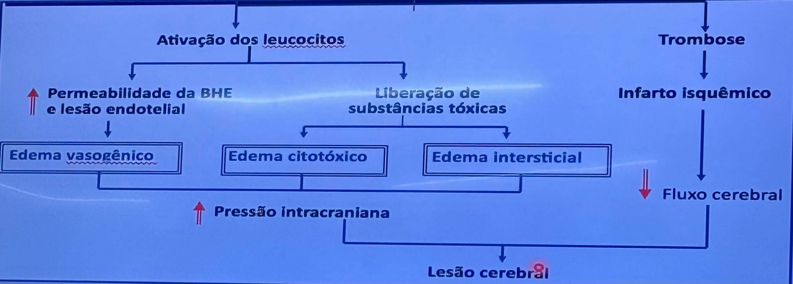
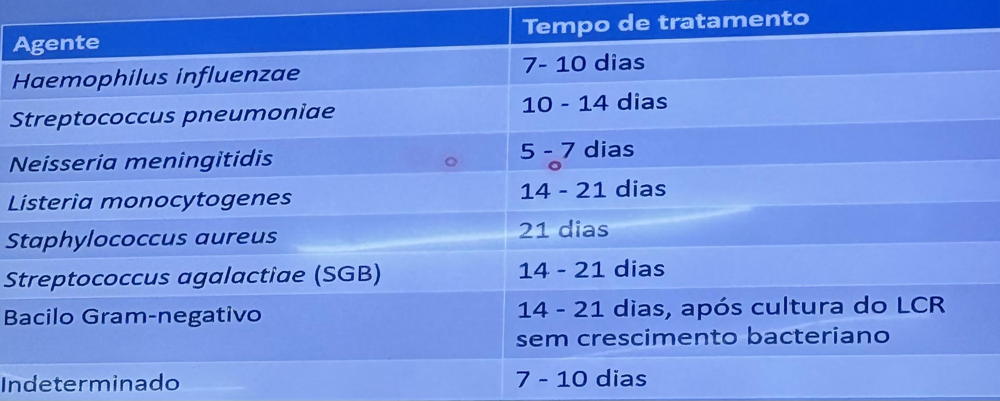

Meningite Bacteriana em Pediatria
Pediatria · Infectologia Pediátrica | Método: Resumo Clínico
Definição
Processo inflamatório das leptomeninges (aracnoide e pia-máter), detectável no líquor. Emergência pediátrica — pode levar ao óbito em <24–48h.
Agentes Etiológicos por Faixa Etária

Fisiopatologia: ativação de leucócitos → edema vasogênico + citotóxico + intersticial → ↑ PIC → lesão cerebral
| Faixa Etária | Agentes Principais |
|---|
| 0–3 meses | Streptococcus agalactiae (GBS), Listeria monocytogenes, bacilos gram-negativos (E. coli), S. pneumoniae |
| 3 meses – 5 anos | N. meningitidis (principal), S. pneumoniae |
| >5 anos / Adolescentes | N. meningitidis, S. pneumoniae |
No Brasil: N. meningitidis = principal causa em crianças >3 meses; S. pneumoniae = maior morbimortalidade
Manifestações Clínicas
Tríade Clássica (>1 ano)
Febre + Cefaleia + Vômitos em jato
Outros sinais em maiores de 1 ano:
- Rigidez de nuca (sinal mais específico)
- Fotofobia, fonofobia
- Prostração, confusão mental
- Petéquias/púrpuras (meningococcemia)
RN e Lactentes <1 ano (Sinais Inespecíficos)
- Abaulamento de fontanela (sinal mais específico em lactentes)
- Irritabilidade ou letargia
- Recusa alimentar, sucção débil
- Instabilidade térmica (hipo ou hipertermia)
- Convulsões, apneia
Sinais Meníngeos — Como Testar
| Sinal | Técnica | Positivo quando... |
|---|
| Rigidez de nuca | Flexão passiva do pescoço | Resistência ou dor |
| Kernig | Elevação do membro inferior com quadril flexionado a 90° | Dor ou resistência à extensão do joelho |
| Brudzinski | Flexão passiva do pescoço | Flexão reflexa dos joelhos e quadris |
| Lasègue | Elevação do membro inferior estendido | Dor ao elevar a 70° (raiz nervosa) |
Doença Meningocócica — Formas Clínicas
- Meningococcemia sem meningite: sepse grave, petéquias/púrpuras, choque → maior letalidade (70%)
- Meningite + meningococcemia: forma mais comum
- Meningite isolada: meninges inflamadas sem bacteremia expressiva
Atenção: petéquias/púrpuras com febre = síndrome de Waterhouse-Friderichsen até prova em contrário
Diagnóstico
Exames Solicitados
- Hemograma + PCR (leucocitose com desvio à esquerda)
- Hemocultura (2 amostras antes do ATB)
- Punção lombar (padrão ouro) — ver contraindicações
Contraindicações à Punção Lombar
- Sinais de hipertensão intracraniana (papiledema, anisocoria, déficits focais)
- Glasgow <10
- Instabilidade hemodinâmica
- Plaquetopenia grave (<50.000/mm³)
- Infecção cutânea no local da punção
⚠️ Não retardar ATB para aguardar líquor! Se contraindicação → ATB empírico → TC → punção depois
Interpretação do Líquor
| Parâmetro | Normal | Bacteriana | Viral |
|---|
| Aspecto | Límpido/cristalino | Turvo/purulento | Límpido |
| Células | 0–5/mm³ | >1000/mm³ (neutrófilos) | 10–1000/mm³ (linfócitos) |
| Glicose | 45–80 mg/dL (>60% da glicemia) | <30 mg/dL | Normal ou levemente baixa |
| Proteína | 15–45 mg/dL | >40 mg/dL (pode ser >100–200) | Normal ou levemente alta |
| Gram | Negativo | + (DGN = meningococo; DGP = pneumococo) | Negativo |
Tratamento
Antibiótico Empírico
| Faixa Etária | Esquema |
|---|
| 0–3 meses | Ampicilina (200–400 mg/kg/dia, 6/6h) + Cefotaxima ou Ceftriaxona |
| >3 meses | Ceftriaxona 100 mg/kg/dia, 12/12h (máximo 4 g/dia) |
| Suspeita de pneumococo resistente | Ceftriaxona + Vancomicina 60 mg/kg/dia 6/6h |
Duração do Tratamento

Duração do tratamento: N. meningitidis 5–7 d | H. influenzae 7–10 d | S. pneumoniae 10–14 d | Listeria/SGB/BGN 14–21 d
| Agente | Duração |
|---|
| N. meningitidis | 7–10 dias |
| S. pneumoniae | 14 dias |
| H. influenzae | 7–10 dias |
| S. agalactiae (GBS) | 14–21 dias |
| Listeria | 21 dias |
Terapia Adjuvante — Dexametasona
- Dose: 0,15 mg/kg 6/6h por 4 dias
- Administrar antes ou junto da 1ª dose do ATB (para reduzir resposta inflamatória)
- Indicada para: H. influenzae (melhor evidência) e S. pneumoniae (reduz sequelas neurológicas)
- Não indicada para meningococo e em <6 semanas de vida
Profilaxia para Comunicantes
| Agente | Indicação | Medicamento | Dose | Duração |
|---|
| N. meningitidis | Domiciliares + contatos íntimos até 30 dias do caso | Rifampicina | Criança: 10 mg/kg 12/12h | 2 dias |
| | | Adulto: 600 mg 12/12h | 2 dias |
| H. influenzae tipo B | Domiciliares com criança <4 anos não vacinada | Rifampicina | Criança: 20 mg/kg/dia | 4 dias |
| | | Adulto: 600 mg/dia | 4 dias |
- Alternativas: ceftriaxona IM dose única, ciprofloxacina dose única
- Isolamento respiratório: até 24h de ATB (meningococo e Hib)
Complicações
- Convulsões, coleção subdural, hidrocefalia
- Surdez (principal sequela — avaliar BERA após alta)
- Déficits motores, paralisia de nervos cranianos, retardo mental
- Síndrome de Waterhouse-Friderichsen (insuficiência adrenal por hemorragia adrenal)
- Artrite (tardia no meningococo) → AAS 80 mg/kg até melhora
Meningite Viral
- Agentes: Enterovírus (mais comum), Herpes simples
- Líquor: límpido, linfocitário, glicose normal, proteína levemente elevada
- Diagnóstico: confirmar etiologia → suspender ATB + isolamento de contato
- Tratamento: suporte + sintomáticos (Herpes: aciclovir EV)
Perguntas que o Professor Provavelmente Vai Fazer
- Qual a tríade da meningite? → Febre + cefaleia + vômitos (em crianças >1 ano)
- Qual o sinal mais específico em lactentes? → Abaulamento de fontanela
- Qual o ATB empírico para criança >3 meses? → Ceftriaxona 100 mg/kg/dia
- Quando usar dexametasona? → Antes ou junto ao 1º ATB, para H. influenzae e pneumococo
- O que é Waterhouse-Friderichsen? → Hemorragia adrenal bilateral em meningococcemia grave → choque adrenal
Alertas OSCE ⚠️
- Petéquias/púrpuras + febre = meningococcemia até prova em contrário — emergência!
- Não atrasar ATB para aguardar líquor se criança instável ou com contraindicação à punção
- Dexametasona ANTES ou JUNTO ao ATB — não depois (só funciona antes da cascata inflamatória)
- Vancomicina não penetra no LCR isoladamente — sempre associar à ceftriaxona
- Surdez = sequela mais frequente da meningite bacteriana → sempre pedir BERA no seguimento
Fonte
- Gerado a partir de:
conteudo_meningites.md (Aula 06 Teórica + Prática + Caso Clínico Sofia 18 meses) - Seções consultadas: agentes por faixa etária, manifestações clínicas, líquor, tratamento empírico, dexametasona, profilaxia
- Gaps identificados: meningite tuberculosa brevemente mencionada na fonte — não detalhada neste arquivo (foco em bacteriana e viral)